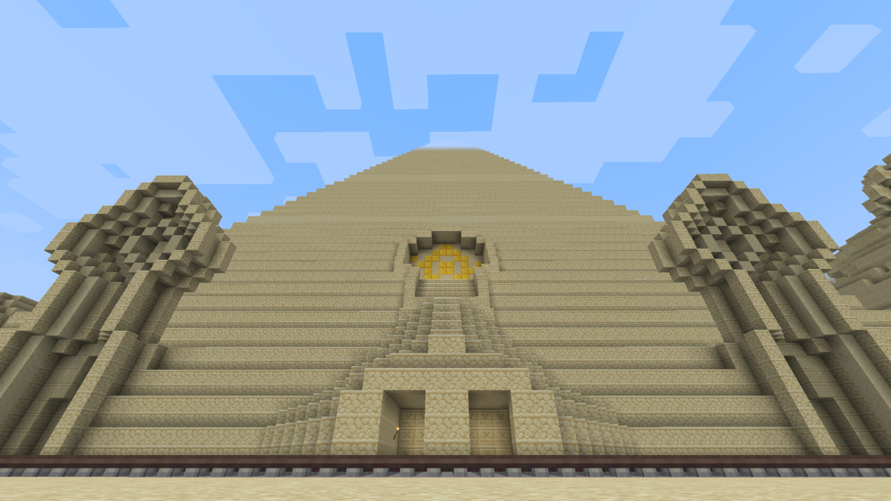
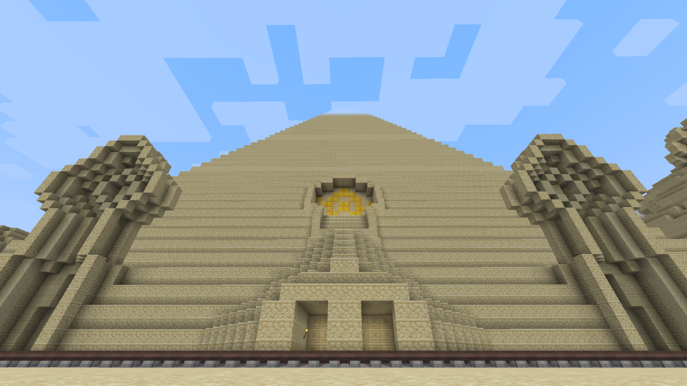

Chapter 1 : the great pyramid


Two Players are required !!! Please turn off ingame music and decrease main volume under 50 % Some create mechanism will seem closed or inactive after a respawn. I recommend to the dead player to quit and restart
Chapter 1 : the great pyramid
